JMeter教程
前言
1.关于Jmeter
JMeter是Apache组织开发的基于Java的压力测试工具。用于对软件做压力测试，它最初被设计用于Web应用测试，但后来扩展到其他测试领域。 它可以用于测试静态和动态资源，例如静态文件、Java 小服务程序、CGI 脚本、Java 对象、数据库、FTP 服务器， 等等。
JMeter 可以用于对服务器、网络或对象模拟巨大的负载，来自不同压力类别下测试它们的强度和分析整体性能。
另外，JMeter能够对应用程序做功能/回归测试，通过创建带有断言的脚本来验证你的程序返回了你期望的结果。为了最大限度的灵活性，JMeter允许使用正则表达式创建断言。
2. 我们为什么使用Jmeter
- 开源免费，基于Java编写，可集成到其他系统可拓展各个功能插件
- 支持接口测试，压力测试等多种功能，支持录制回放，入门简单
- 相较于自己编写框架活其他开源工具，有较为完善的UI界面，便于接口调试
- 多平台支持，可在Linux，Windows，Mac上运行selenium 是一套完整的web应用程序测试系统，包含了测试的录制（selenium IDE）,编写及运行（Selenium Remote Control）和测试的并行处理（Selenium Grid）。Selenium的核心Selenium Core基于JsUnit，完全由JavaScript编写，因此可以用于任何支持JavaScript的浏览器上。
3.主要组件介绍
（1）测试计划(Test Plan)
是使用JMeter进行测试的起点，它是其它JMeter测试元件的容器。
（2）线程组(Thread Group)
代表一定数量的并发用户，它可以用来模拟并发用户发送请求。
（3）取样器(sampler)
定义实际的请求内容，被线程组包含，我们主要用HTTP请求。
（4）监听器(Listener)
负责收集测试结果，同时也被告知了结果显示的方式。我们常用的包括：聚合报告、察看结果树、用表格查看结果，都支持将结果数据写入文件。其他的添加上去看看就行。
（5）逻辑控制器(Logic Controller)
可以自定义JMeter发送请求的行为逻辑，它与Sampler结合使用可以模拟复杂的请求序列。
其分为循环控制器和事务控制器。
（6）断言(Assertions)
可以用来判断请求响应的结果是否如用户所期望的。它可以用来隔离问题域，即在确保功能正确的前提下执行压力测试。这个限制对于有效的测试是非常有用的。
（7）配置元件(Config Element)
维护Sampler需要的配置信息，并根据实际的需要会修改请求的内容。我们主要在参数化中用到CSV Data Set Config。
（8）前置处理器(Pre Processors)和后置处理器(Post Processors)
负责在生成请求之前和之后完成工作。前置处理器常常用来修改请求的设置，后置处理器则常常用来处理响应的数据。我们主要在动态关联中用到后置处理器的正则表达式提取器。
（9）定时器(Timer)
负责定义请求之间的延迟间隔。
（10）执行顺序(Execution sequence)
配置元件、前置处理器、定时器、取样器、后置处理器、断言、监听器
4.工作流程
JMeter通过模拟一组用户将请求发送到目标服务器。 随后，收集数据以通过各种格式计算目标服务器的统计和显示性能度量。
如下图所示：

JMeter 环境安装及配置
JMeter依赖Java环境，如果没事先安装jdk，启动jmeter会出现“Not able to find Java executable or version. Please check your Java installation.”的错误。
1. 安装JDK
JDK下载地址：
https://www.oracle.com/java/technologies/downloads/#java21
- 示例为Windows，实际应根据电脑操作系统下载对应的jdk安装包下载后双击安装包进行安装。
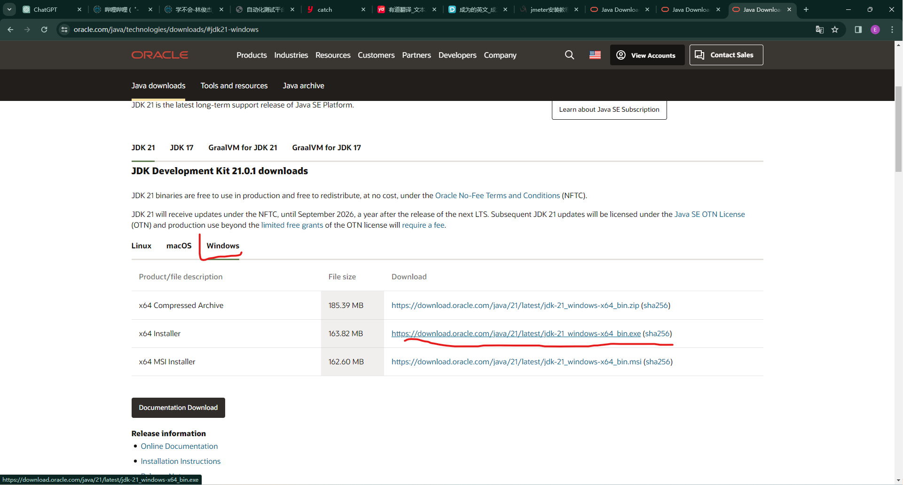
2.配置JDK系统变量
安装完成了就是配置环境变量。右键此电脑-属性，然后点击高级系统设置-系统变量。
注意：系统变量是很重要的，不要随意改动，不然可能会造成系统死机。 我的系统是win11，如果你的是win10或win8、win7，进入系统变量的方法可能会有不同。
- 新建系统变量：
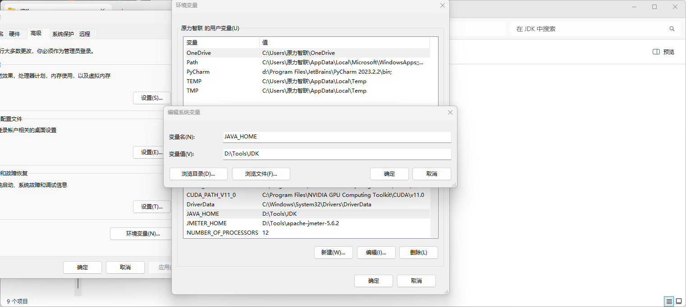
- 变量值就是JDK的安装目录路径。
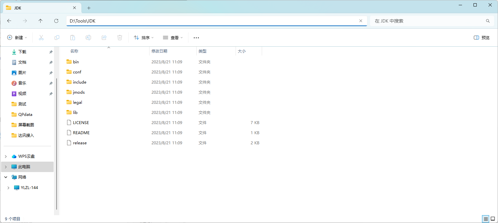
- 找到Path，选中，点击编辑。
新建两个环境变量，依次输入 %JAVA_HOME%\bin; %JAVA_HOME%\jre\bin; (windows11好像不需要输入最后的;) 确定-确定-应用-确定
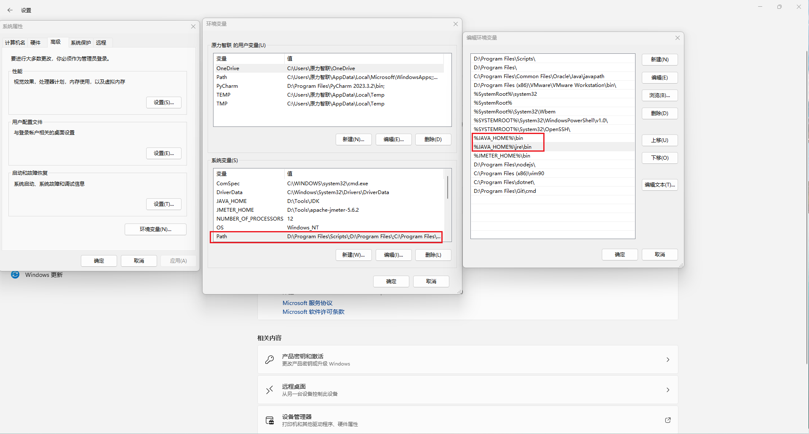
3.安装Jmeter
Jmeter下载地址
https://jmeter.apache.org/download_jmeter.cgi
- 点击红框内选项，下载Jmeter的ZIP包
- 在目录下解压，建议解压到D:\Tools目录下
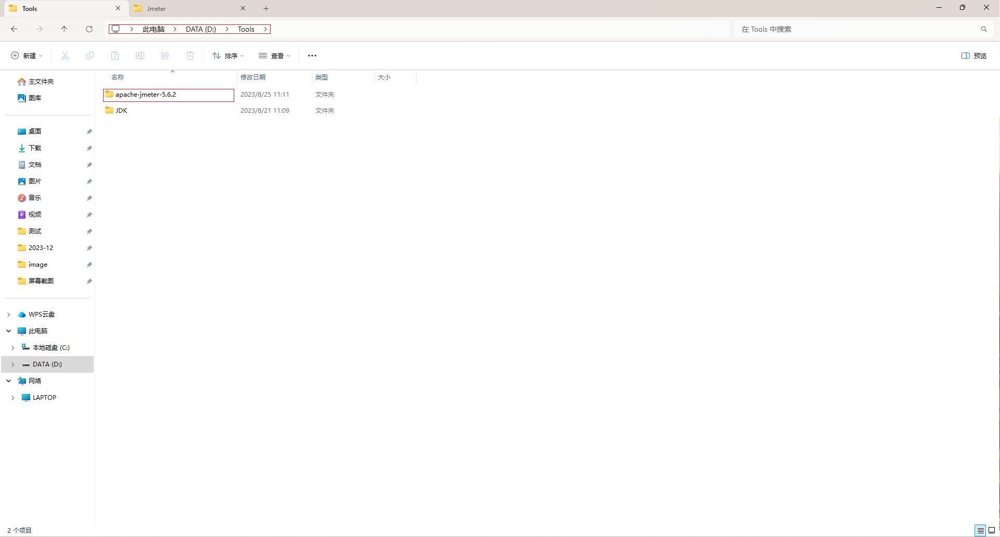
- 汉化Jmeter界面，需要修改Jmeter目录下bin文件夹内jmeter.properties。language=zh_CN
推荐使用Notepad++软件进行修改
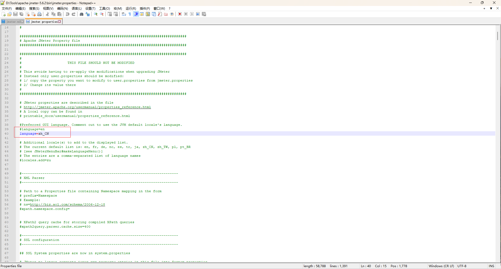
- 把Jmeter.bat启动文件发送到桌面快捷方式
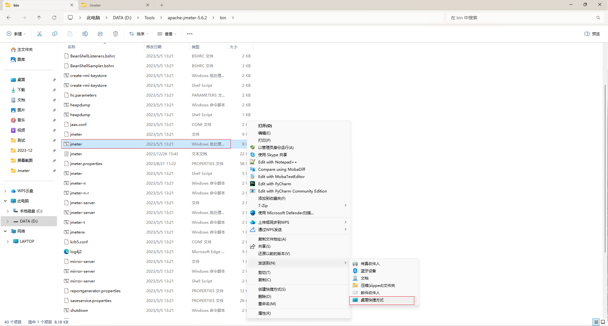
- 在桌面打开后，我们就可以使用Jmeter了
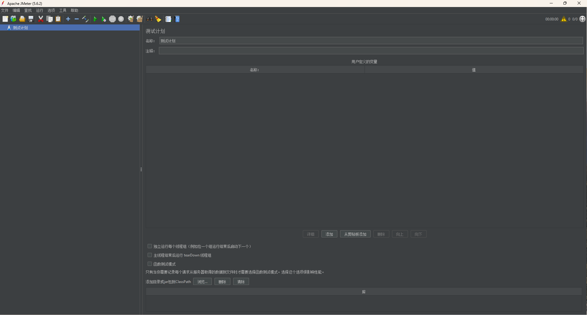
4.快速使用
-
右键测试计划--添加--线程(用户)--线程组
-
右键线程组--添加--取样器--HTTP请求
-
点击HTTP请求--输入协议、IP或域名、端口、路径、内容编码，选择请求方式。
示例：
协议：HTTP IP：127.0.0.1 端口：5000 请求方式：GET 路径：/QuickUse/
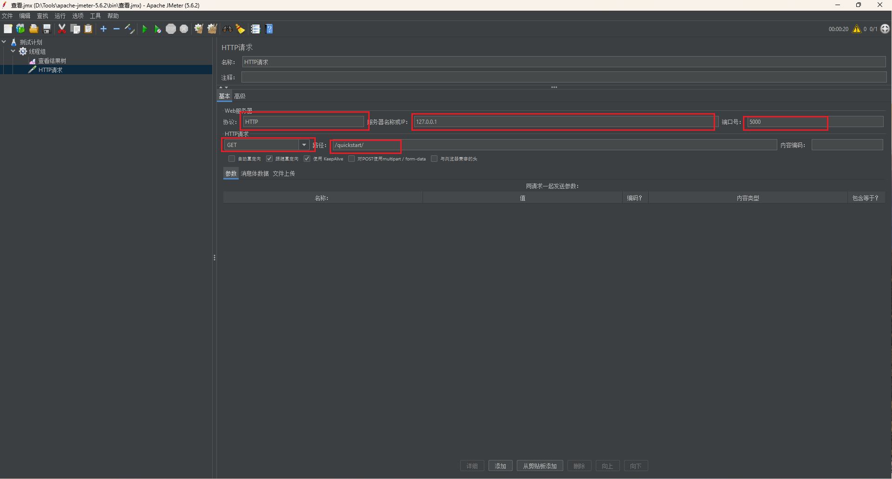
-
右键测试计划--添加--监听器--查看结果树
-
点击上方绿色三角按钮
-
点击查看结果树
响应数据：
{"code": 200, "data": "It is successful!"}
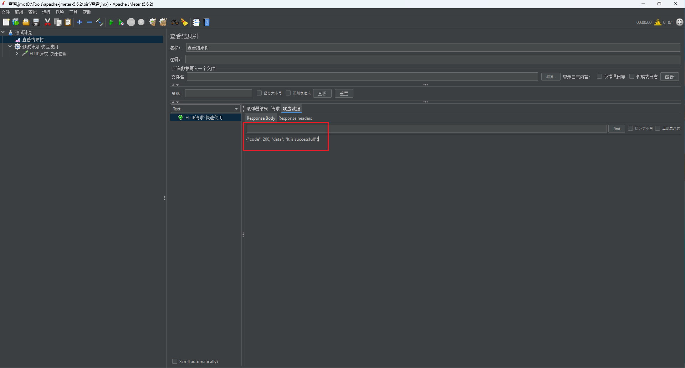
请注意：本文中示例接口仅在本地局域网内可用。后续我可能会将这些接口打包上传到我的 GitHub 仓库中，方便下载和使用。 下载后的 ZIP 文件解压后，可在本地运行，你就可以对接口进行请求了。
使用方法
1.测试计划
可以将测试计划可视化为用于运行测试的JMeter脚本。测试计划由测试元素组成，例如线程组，逻辑控制器，样本生成控制器，监听器，定时器，断言和配置元素。 每个测试计划中至少应有一个线程组。 我们可以根据要求添加或删除元素。 上述的快速开始就是一个测试计划。
测试计划控制面板包含：
-
用户定义的变量
-
独立运行每个线程组
-
主线程结束后运行tearDown线程组
-
函数测试模式
-
添加目录或jar包到classpath
(1)用户定义的变量
当你在测试计划的多个部分中有重复值时，可使用用户定义变量，它提供了灵活性。
使用${name} 调用。
- 添加用户定义的变量
名称输入
UserDefinedVariables
值可以随意输入，我输入的是：
我是用户定义的变量
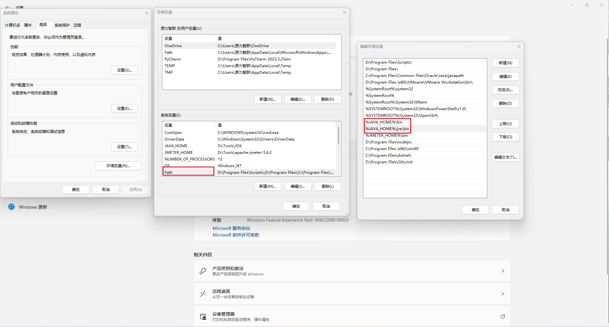
- 调用用户定义的变量
请求地址：
HTTP://127.0.0.1:5000/TestPlan/
请求方式：
POST
消息体数据：
{"UserDefinedVariables"："${UserDefinedVariables}"}
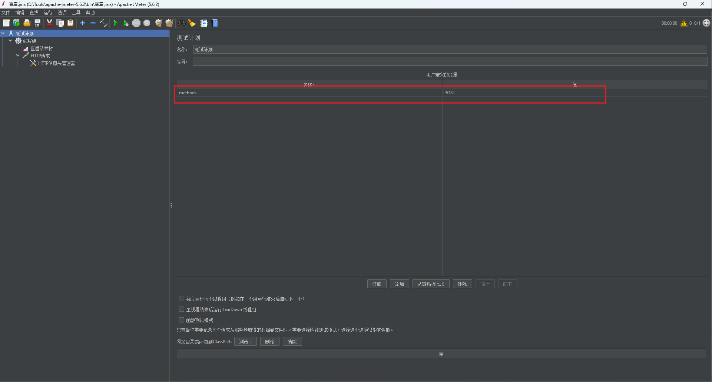
- 右键取样器-添加-配置元件-HTTP信息头管理器
在HTTP信息头管理器中点击下方添加信息头
名称输入：
Content-Type
值输入：
application/json
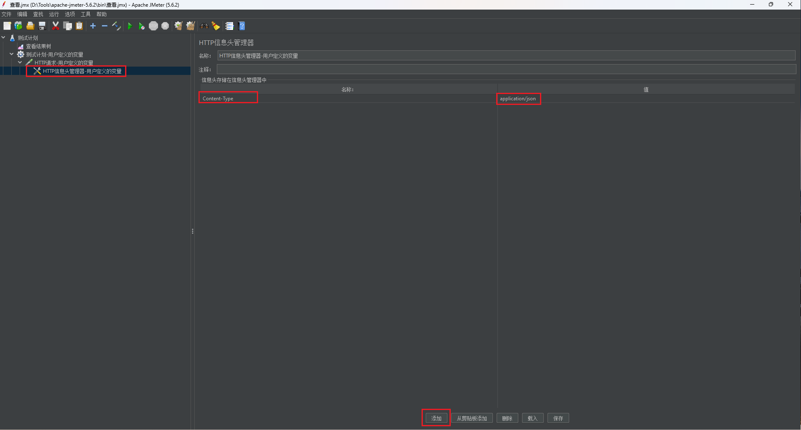
- 点击上方绿色三角运行后，查看结果树
请求参数：
{"UserDefinedVariables"："我是用户定义的变量"}
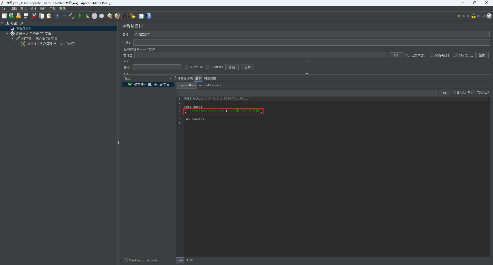
(2).独立运行每个线程组
当一个测试计划中有多个线程组，当多个线程组都是是执行状态时，可能会用到测试计划中的 “独立运行每个线程组”勾选框。
此次示例的后端代码如下：
@api.route('/TestPlan1/', methods=['GET', 'POST'])
def testplan1():
sleep(3)
if request.method != 'POST':
return json.dumps({'code': 200, 'data': 'ERROR: It is TestPlan1 API, you are not POST request!'})
data = request.get_json()
if "RunThreadGroupsConsecutively" not in data or "ThreadGroupName" not in data or "RequestTime" not in data:
return json.dumps({'code': 400, 'data': 'The request body is error!'})
return json.dumps({'code': 200,
'data': 'Your request parameters is ' + '"RunThreadGroupsConsecutively:'
+ data['RunThreadGroupsConsecutively'] + '", "ThreadGroupName": "' + data[
'ThreadGroupName'] + '", "RequestTime": "' + data['RequestTime'] + '"'})
我把接口设置了休眠三秒，即接口在接收到请求数据三秒后，返回响应数据。
Jmeter脚本如下：
- 第一个线程组：测试计划-独立运行每个线程组-1
请求地址：
HTTP://127.0.0.1:5000/TestPlan1/
请求方式：
POST
消息体数据：
{"RunThreadGroupsConsecutively":"未勾选/勾选","ThreadGroupName":"测试计划-独立运行每个线程组-1","RequestTime":"${__time(yyyy-MM-dd hh:mm:ss,now)}"}
${__time(yyyy-MM-dd hh:mm:ss,now)}的作用是发送请求时，引用当时时间，格式为2020-06-23 14:57:56，后面讲到函数时再详细阐述。
在HTTP信息头管理器中点击下方添加信息头：
名称输入：
Content-Type
值输入：
application/json
- 第二个线程组：测试计划-独立运行每个线程组-2
请求地址：
HTTP://127.0.0.1:5000/TestPlan1/
请求方式：
POST
消息体数据：
{"RunThreadGroupsConsecutively":"未勾选/勾选","ThreadGroupName":"测试计划-独立运行每个线程组-2","RequestTime":"${__time(yyyy-MM-dd hh:mm:ss,now)}"}
在HTTP信息头管理器中点击下方添加信息头
名称输入：
Content-Type
值输入：
application/json
- 不勾选时的执行顺序如下：测试计划中的多个线程组按照并发逻辑进行请求（同时请求）
运行后查看结果树：
测试计划-独立运行每个线程组-1
请求参数：
{"RunThreadGroupsConsecutively":"未勾选","ThreadGroupName":"测试计划-独立运行每个线程组-1","RequestTime":"2024-01-03 04:27:16"}
请求时间是2024-01-03 04:27:16
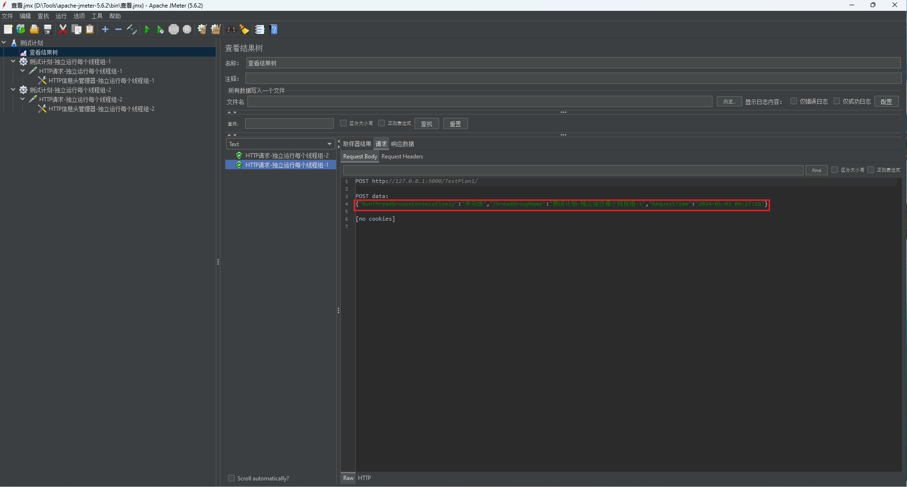
测试计划-独立运行每个线程组-2：
请求参数：
{"RunThreadGroupsConsecutively":"未勾选","ThreadGroupName":"测试计划-独立运行每个线程组-2","RequestTime":"2024-01-03 04:27:16"}
请求时间是2024-01-03 04:27:16
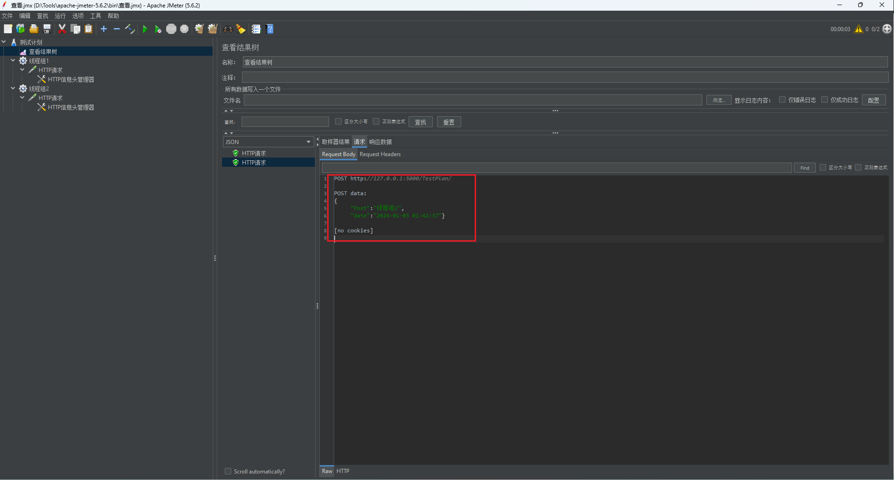
可以看出两个线程组发出请求的时间相同，两个线程组是并发请求。
- 勾选时执行顺序如下：测试计划中的多个线程组按照串行逻辑进行请求（顺序请求）
运行后查看结果树：
测试计划-独立运行每个线程组-1
请求参数：
{"RunThreadGroupsConsecutively":"勾选","ThreadGroupName":"测试计划-独立运行每个线程组-1","RequestTime":"2024-01-03 04:40:31"}
请求时间是2024-01-03 04:40:31
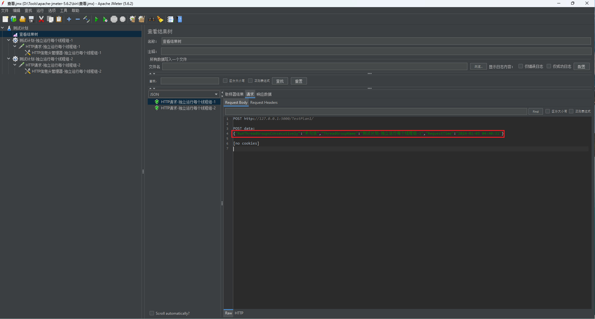
测试计划-独立运行每个线程组-2
请求参数：
{"RunThreadGroupsConsecutively":"勾选","ThreadGroupName":"测试计划-独立运行每个线程组-2","RequestTime":"2024-01-03 04:40:34"}
请求时间是2024-01-03 04:40:34
可以看出两个线程组发出请求的时间相隔3秒，正是接口中休眠的3秒，两个线程组是顺序请求。
(3)主线程结束后运行tearDown线程组
主要应用于普通线程配置在取样器错误后要执行的动作选择停止测试或立即停止测试时。
如果勾选此项，普通线程因取样器错误结束执行时，会继续执行tearDown线程。
右键测试计划-添加-线程-tearDown线程组。
Jmeter脚本如下：
测试计划-错误线程:
线程组控制面板内，在取样器错误后要执行的动作中，勾选停止或立即停止
请求地址输入无法访问的地址：
HTTP://127.127.5.1:5000/T/
测试计划-主线程结束后运行tearDown线程组：
请求地址：
HTTP://127.0.0.1:5000/TestPlan1/
请求方式：
POST
消息体数据：
{"RunThreadGroupsConsecutively":"未勾选/勾选","ThreadGroupName":"测试计划-独立运行每个线程组-2","RequestTime":"${__time(yyyy-MM-dd hh:mm:ss,now)}"}
在HTTP信息头管理器中点击下方添加信息头
名称输入：
Content-Type
值输入：
application/json
- 勾选主线程结束后运行tearDown线程组
运行后查看结果树：
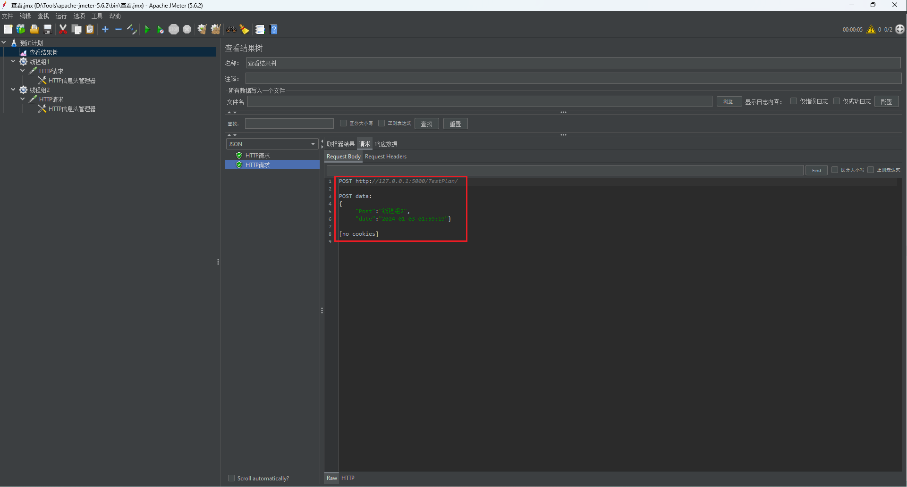
可以看出在取样器错误的情况下，仍执行tearDown线程组
- 不勾选主线程结束后运行tearDown线程组
运行后查看结果树：
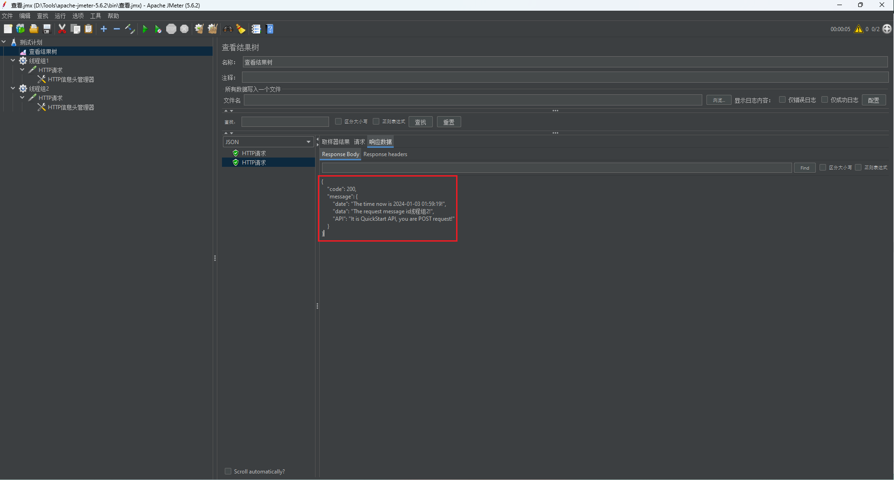
可以看出在取样器错误的情况下，不再执行tearDown线程组
(4).函数测试模式
因极少使用，现在先不阐述，待日后更新
(5).添加目录或jar包到classpath
添加文件或jar包，此功能最常用于调用外部jar包。当脚本需要调用外部的java文件或jar包时，可以把jar包路径添加到这里，然后就可以在beanshell中直接import进来，并调用jar包中的方法。
后续讲到beanshell时，再阐述用法。
2.线程组
线程组元件是所有测试计划的入口。所有的取样器和控制器必须放在线程组下。一个线程组可以看作一个虚拟用户池，其中的每个线程都可以理解为一个虚拟用户，多个虚拟用户同时去执行相同的一批次任务。每个线程之间都是隔离的，互不影响的。一个线程的执行过程中，操作的变量不会影响其他线程的变量值。
线程组包含:
- 线程组(普通线程组)
- setup线程组
- tearDown 线程组
- 开放模型线程组
(1).执行顺序
1).setup线程组>线程组(普通线程组)=开放模型线程组>tearDown 线程组
Jmeter脚本如下：
setup线程组(默认面板)：
请求地址：
HTTP://127.0.0.1:5000/QuickUse/
请求方式：
GET
添加参数：
名称：
date
值：
${__time(yyyy-MM-dd%hh:mm:ss,now)}
线程组(默认面板)：
请求地址：
HTTP://127.0.0.1:5000/TestPlan/
请求方式：
POST
消息体数据：
{"UserDefinedVariables":"${__time(yyyy-MM-dd hh:mm:ss,now)}"}
在HTTP信息头管理器中点击下方添加信息头
名称输入：
Content-Type
值输入：
application/json
右键取样器-添加-定时器-固定定时器(作用是延迟线程组或取样器工作的时间)
线程延迟输入(单位毫秒)：
3000
tearDwon线程组(默认面板)
请求地址：
HTTP://127.0.0.1:5000/TestPlan1/
请求方式：
POST
消息体数据：
{"RunThreadGroupsConsecutively":"1", "ThreadGroupName":"tearDown线程组", "RequestTime":"${__time(yyyy-MM-dd hh:mm:ss,now)}"}
在HTTP信息头管理器中点击下方添加信息头
名称输入：
Content-Type
值输入：
application/json
右键取样器-添加-定时器-固定定时器(作用是延迟线程组或取样器工作的时间)
线程延迟输入(单位毫秒)：
3000
运行后查看结果树：
setup线程组：
请求参数：
?date=2024-01-04%04:19:12
请求时间是2024-01-04 04:19:12
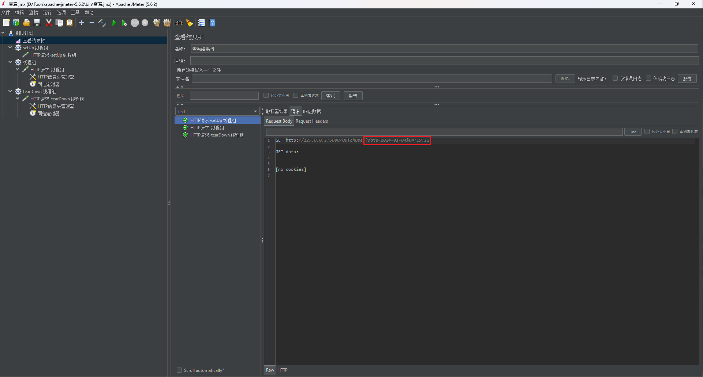
线程组：
请求参数：
{"UserDefinedVariables":"2024-01-04 04:19:15"}
请求时间是2024-01-04 04:19:15

tearDown线程组：
请求参数：
{"RunThreadGroupsConsecutively":"1", "ThreadGroupName":"tearDown线程组", "RequestTime":"2024-01-04 04:19:18"}
请求时间是2024-01-04 04:19:18
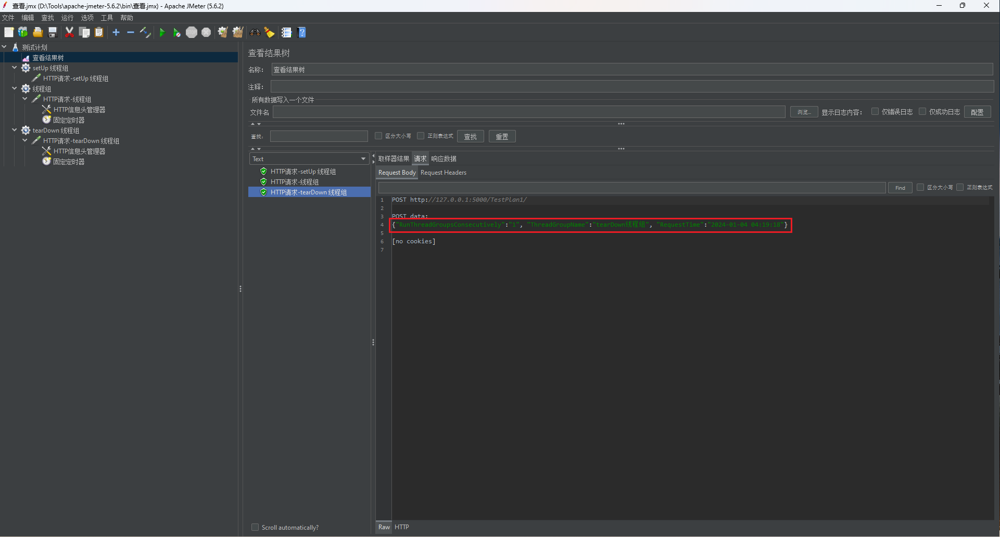
可以看出它们之间各隔3秒(固定定时器延迟3秒)，是按照setup线程组>线程组(普通线程组)>tearDown 线程组的顺序。
开放模型线程组与线程组优先级一样，在此不再演示。
2).多个同类型线程组情况下，需搭配 ‘独立运行每个线程组’。
-
勾选时，同类型线程组顺序请求
-
未勾选时，同类型线程组随机请求，时间大致一样(伪并发)
上面在测试计划篇章中，以线程组进行过演示。
其它线程组同类型下与线程组逻辑一致，不再进行演示。
(1).setup线程组、线程组、tearDown线程组
这三种类型的线程组的控制面板基本一致，包括：
-
取样器错误后执行的动作
-
线程数
-
Ramp-Up时间(秒)
-
循环次数
-
Same user on each iteration(在每次迭代中使用相同的用户)
-
调度器
线程组的控制面板多一个：
- 延迟创建线程直到需要
1).取样器错误后执行的动作
这几个配置项控制了「当遇到错误的时候测试的执行策略」是否会继续执行。
- 继续：忽略错误，继续执行
jmeter脚本如下：
测试计划-错误线程:
请求地址输入无法访问的地址：
HTTP://127.127.5.1:5000/T/
- 启动下一进程循环： 忽略错误，线程当前循环终止，执行下一个循环。
- 停止线程：当前线程停止执行，不影响其他线程正常执行。
- 停止测试：整个测试会在所有当前正在执行的线程执行完毕后停止
- 立即停止测试：整个测试会立即停止执行，当前正在执行的取样器可能会被中断。